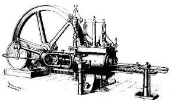
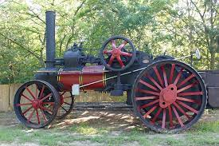

A gőzgép hőerőgép, amely a gőz energiáját mechanikai munkává alakítja.

Az első gőzmeghajtású szerkezetet (eolipila) Alexandriai Hérón találta fel az i. e. 1. században, de az csak érdekesség, játékszer maradt. Az első igazi gőzgép feltalálójaként James Wattot tartjuk számon, azonban kifejlesztéséhez sokan hozzájárultak.
A modern gőzgép megalkotásától (1769) számítjuk az ipari forradalom kezdetét.
